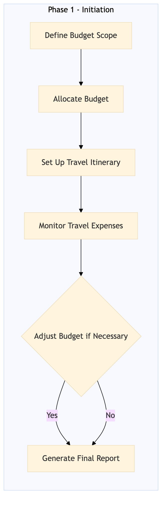

This process document outlines the budget management and cost tracking for meetings, events, and MICE (Meetings, Incentives, Conferences, Exhibitions) within the TMC Travel Programme Management domain.
| Trigger | Initiation of a new meeting or event by the travel manager |
| Outcome | Successful budget allocation, accurate cost tracking, and timely reporting for all meetings, events, and MICE activities. |
| Systems | SAP Concur T2 SAP Concur Expense Amex GBT Neo/Complete Expedia Open World Partner Central Amadeus NDC Sabre GDS Travelport AWS SageMaker Tableau SAP S/4HANA SAP Analytics Cloud |

Click to enlarge
| Step | Name & Pain Point | Role | System | Input | Output | KPI | Flags |
|---|---|---|---|---|---|---|---|
| 1.1 | Define Budget Scope Inconsistent budget definitions across different events | Travel Manager | SAP Concur T2 | Event details, attendee list, travel requirements | Budget scope document | 100% accurate budget definition within 3 days | ⚠ Exception |
| 1.2 | Allocate Budget Overlooking specific cost categories in budget allocation | Finance Manager | SAP Concur Expense, SAP S/4HANA | Budget scope document | Allocated budget details | 95% successful budget allocation within 2 days | ⚠ Exception |
| 1.3 | Set Up Travel Itinerary Inaccurate cost estimates leading to budget overruns | Travel Manager | Expedia Open World, Partner Central, Amadeus NDC, Sabre GDS, Travelport | Allocated budget details, attendee list | Travel itinerary with cost estimates | 90% accurate cost estimates within 4 days | ◆ Decision |
| 1.4 | Monitor Travel Expenses Delayed expense reporting causing budget discrepancies | Travel Manager, Finance Analyst | SAP Concur Expense, Amex GBT Neo/Complete, AWS SageMaker | Travel itinerary with cost estimates | Real-time expense reports | 98% accurate expense tracking within 24 hours of submission | ⚠ Exception |
| 1.5 | Adjust Budget if Necessary Lack of flexibility in adjusting budgets | Travel Manager, Finance Manager | SAP Concur T2, SAP S/4HANA | Real-time expense reports | Adjusted budget details | 90% successful budget adjustments within 1 day | ◆ Decision |
| 1.6 | Generate Final Report Incomplete or inaccurate final reports | Travel Manager, Finance Analyst | Tableau, SAP Analytics Cloud | Adjusted budget details, real-time expense reports | Final cost report | 100% complete and accurate final report within 3 days after event | ⚠ Exception |